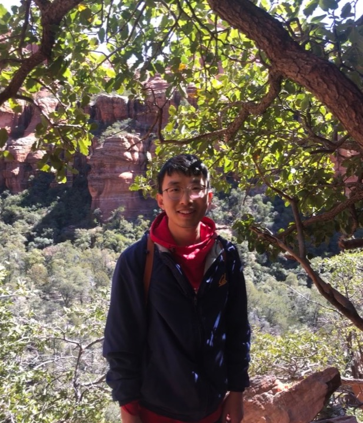

Analysis
Spring 2025, Fall 2025, Spring 2026
MATH-UA 325 AnalysisPersonal Homepage
My research interests center on Kähler geometry and its interactions with metric geometry and algebraic geometry. In particular, I study Kähler metrics satisfying curvature conditions and Kähler-Ricci flows.
I am currently a Courant Instructor, a postdoctoral position, at NYU Courant , working with Valentino Tosatti . Before this, I was a postdoc at SL Math in Fall 2024. I completed my Ph.D. at UC Berkeley under the supervision of Song Sun .

Research
论文列表如下。
arXiv preprint
arXiv preprint
arXiv preprint
arXiv preprint
arXiv preprint
arXiv preprint
Crelle's Journal
IMRN
arXiv preprint
Inventiones mathematicae
Math Annalen
Seminars and notes
我正在共同组织 informal online complex geometry seminar 。